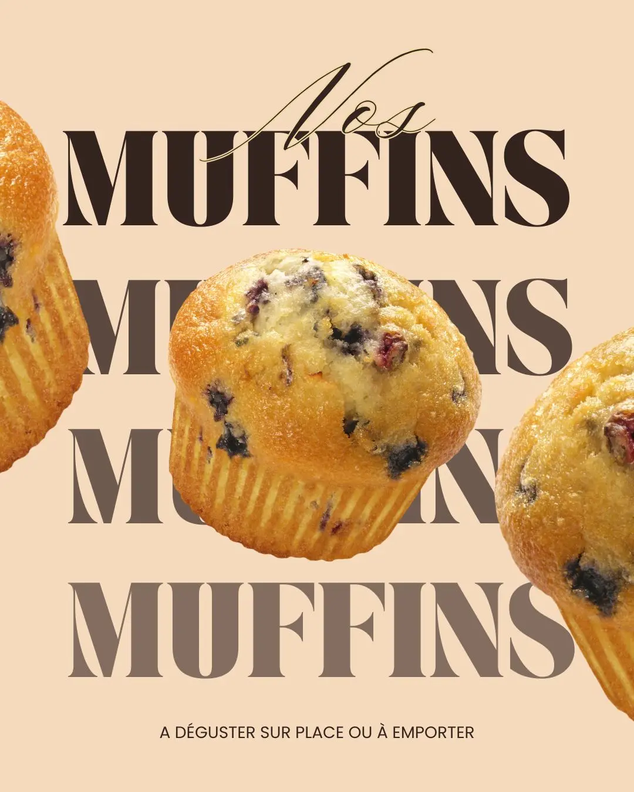
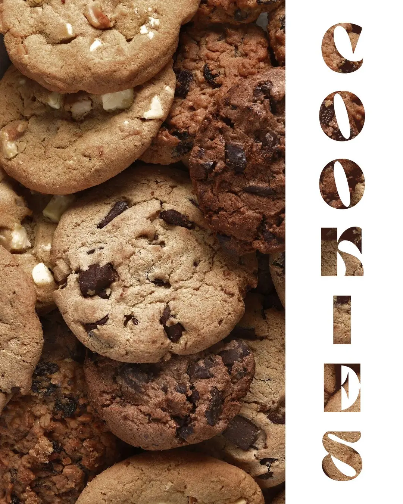
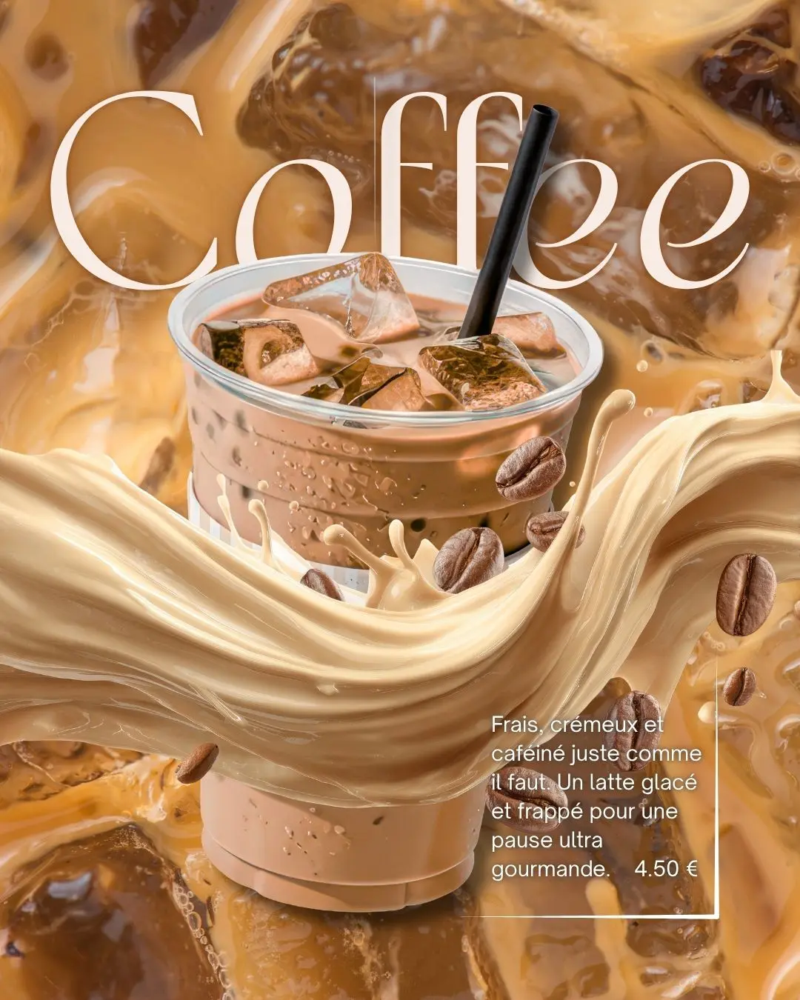

Vos futures ventes commencent dès la première impression.
Du 1er clic au 1er client, j'aide les indépendants, freelances, artisans et commerçants à construire le parcours en ligne qui guide leurs prospects jusqu’à la signature.
Située à Obernai en Alsace • Je vous accompagne en présentiel dans le Bas-Rhin ou à distance partout en France
Ils m'ont confié leur parcours digital
Des entrepreneurs accompagnés partout en France.


Vous faites déjà tout ce qu'il faut… en apparence.
Vous avez déjà investi du temps pour développer votre visibilité. Pourtant, les résultats ne sont pas toujours au rendez-vous.
Vous avez un site.
Vous publiez sur LinkedIn ou Instagram.
Vous avez une fiche Google.
Vous communiquez régulièrement.
Et pourtant...
Les demandes ne suivent pas.
Ou elles ne sont pas les bonnes.
Pendant ce temps, vous passez des heures à communiquer, modifier votre site, publier, tester...
Autant de temps que vous ne passez pas avec vos clients.
Et pour un indépendant...
Le temps perdu finit toujours par devenir de l'argent perdu.
Les chiffres parlent d'eux-mêmes.
quittent un site lorsqu'ils ne trouvent pas rapidement l'information recherchée.
abandonnent un formulaire lorsqu'il demande trop d'efforts.
ne reviennent jamais après une mauvaise première expérience en ligne.
Le problème n'est pas toujours votre visibilité.
C'est souvent votre parcours client.
Du 1er clic au 1er client.
Chaque vente est le résultat d'une succession d'étapes clés. Si un seul maillon faiblit, le prospect abandonne.
Découverte
Il vous trouve via un post, Google ou une recommandation.
Compréhension
Il comprend votre offre et votre valeur en quelques secondes.
Confiance
Vos éléments de preuve, avis et style le rassurent totalement.
Premier contact
Un bouton fluide le guide vers un formulaire ou une prise de rendez-vous simple.
Signature
L'échange confirme l'alignement et votre prospect devient votre client.
À chacune de ces étapes, des prospects peuvent abandonner...
Mon rôle est d'identifier exactement où ils décrochent
...et de construire un parcours fluide jusqu'au premier contact.
Où vos clients disparaissent ?
Inutile d'avancer à l'aveugle. En 2 minutes, identifiez le maillon de votre parcours client qui freine aujourd'hui vos prises de contact.
Ton diagnostic se construit au fil de tes réponses.
Encore quelques clics pour découvrir tes premiers axes d'amélioration.
Des solutions adaptées à vos enjeux.
Que vous souhaitiez être accompagné, débloquer un point précis ou déléguer la réalisation, vous trouverez la formule adaptée à votre situation.
Maître Zen
Construire un parcours client fluide, de la découverte à la signature.
- ✓ Vision : Clarifier votre direction.
- ✓ Message : Faire comprendre votre valeur.
- ✓ Parcours : Guider vers la prise de contact.
- ✓ Conversion : Réussir votre RDV découverte.
- ✓ Plan 90 jours : Avancer en autonomie.
Premier échange offert, sans engagement.
Les Katas
Des formats courts pour débloquer un point précis de votre parcours client.
On optimise ensemble votre fiche pour inspirer confiance.
On travaille ensemble les éléments clés de votre profil pour donner envie de vous contacter.
On définit ensemble la structure, les messages clés et le parcours de votre visiteur.
Les Mochis à emporter
Vous préférez déléguer la réalisation ? Je crée les supports adaptés à votre parcours client.
Selon vos besoins, je réalise ces supports ou je m'appuie sur mon réseau de partenaires de confiance.
Ce qu'ils disent de notre collaboration.
Derrière chaque projet, il y a une stratégie adaptée... mais surtout des résultats concrets.
« Nous sommes ravis de la collaboration avec AM 2.0. Nous lui avons confié la refonte et la gestion de notre site web et de notre Instagram. Nous avons gagné en visibilité sur notre région. Et nous avons gagné de nombreuses demandes et de nouveaux adhérents grâce à la stratégie de communication et d'acquisition mises en place. On recommande fortement cette entreprise qui sait écouter et proposer des solutions adaptées. »
Dojo Shodokan
Refonte Web & Stratégie Social Media
« Merci à Aurore pour son regard neuf et extérieur qui m'a permis d'avancer et d'y voir plus clair aussi sur mon profil. »
Jean-Yves C.
Optimisation Profil LinkedIn
« De la réflexion stratégique à la réalisation technique, en passant par la définition des objectifs, Aurore aura su restituer notre vision et nos valeurs à travers des outils orientés acquisition. Après quelques mois de recul, force est de constater que cela porte ses fruits. Merci pour la qualité du travail effectué et enthousiaste pour la suite. »
Steve B.
Stratégie & Outils d'Acquisition
« Je suis ravie du travail réalisé par Aurore. Elle a complètement repensé mon profil LinkedIn pour qu'il reflète vraiment qui je suis et ce que je propose. Au-delà du visuel, elle a mis en place une vraie stratégie de contenu qui m'aide à être plus visible et plus crédible. Depuis, j'ai beaucoup plus de retours positifs lorsque je prends contact avec de nouveaux prospects. Une collaboration que je recommande sans hésiter. »
Anne-Gaëlle B.
Stratégie & Profil LinkedIn
« La création du site m'a apporté plus de visibilité et une meilleure image face à la clientèle qui est de plus en plus exigeante. AM 2.0 m'a guidé de A à Z pour la création du site. Elle a su faire exactement ce que je voulais voir même mieux. Elle est de bon conseil, très professionnelle et à l'écoute. Je suis sincèrement satisfait du travail et le résultat final dépasse mes attentes. »
MB Performance
Création de Site Web sur-mesure
« Aurore est très professionnelle, de bons conseils et réactive.
Elle sait s'adapter à nos envies et besoins tout en proposant des solutions modernes.
Je recommande vivement ! »

Morgan P.
Accompagnement & Solutions Web
« Aurore effectue un travail clair, très lisible et agencé de manière très intuitive. Ses graphismes sont extraordinaires, tout simplement magnifiques. Je recommande+++ »
Prescilia D.G.
Design & Univers Visuel
« Outre ses qualités techniques et son sens esthétique, Aurore détient la capacité précieuse de s'adapter à la culture de l'entité pour laquelle elle exerce son art. »
Raymond R.
Direction & Identité de Marque
Découvrez leur transformation.
Derrière chaque résultat, il y a un parcours, des décisions et une stratégie adaptée à leur activité.
Anne-Gaëlle B.
Assistante administrative
« J'avais énormément d'idées mais je ne savais pas par où commencer. »
- ✓ Clarification du positionnement
- ✓ Construction du message
- ✓ Mise en place du parcours client
« L'accompagnement m'a permis de poser des bases solides. »

Jacques M.
Gérant centre culturel
« Notre communication ne reflétait pas la vie de notre dojo. »
- ✓ Clarification du message
- ✓ Parcours d'inscription optimisé
- ✓ Valorisation des événements
« Notre communication donne enfin envie de nous découvrir et de participer à nos activités. »

Mickaël B.
Gérant atelier automobile
« J'avais des clients, mais je sentais que je pouvais faire mieux. »
- ✓ Clarification de la valeur
- ✓ Optimisation du parcours client
- ✓ Simplification du parcours d'achat
« Ces quelques ajustements ont complètement changé la dynamique. »

Derrière AM 2.0, une obsession.
Comprendre pourquoi un prospect avance... ou pourquoi il abandonne.
Pendant plus de 10 ans, j'ai accompagné des clients sur le terrain en tant que commerciale. Une expérience qui m'a appris une chose essentielle : un prospect ne prend jamais une décision par hasard.
J'ai ensuite appliqué cette même approche au digital en concevant des expériences utilisateurs et en optimisant des parcours clients, notamment sur des projets du groupe Stellantis.
Aujourd'hui, j'aide les indépendants, artisans et commerçants à appliquer ces mêmes méthodes à leur activité pour transformer leur présence en ligne en un véritable levier de développement.
Je vous accompagne du premier clic au premier client en construisant un parcours en ligne qui guide vos prospects jusqu’à la signature.
Chaque activité est différente.
C'est pourquoi je commence toujours par comprendre votre situation avant de proposer une solution.
Parlons de votre projet.
Pendant ce premier rendez-vous, nous échangeons sur vos objectifs, vos difficultés actuelles et les étapes de votre parcours qui méritent d'être optimisées.
30 minutes offertes pour identifier le premier point de blocage de votre parcours client.
Vos questions, nos réponses.
Des réponses simples pour vous aider à choisir la solution la plus adaptée à votre activité.
Que vous soyez en lancement, en pleine évolution ou que votre activité commence à plafonner, il existe une solution adaptée à votre besoin : un accompagnement complet, un atelier ciblé pour débloquer un point précis, ou la délégation de certains supports si vous préférez gagner du temps.
C'est souvent le meilleur moment pour poser des bases solides et éviter les erreurs qui coûtent du temps, de l'énergie... et vous font passer à côté de vos premiers clients.
En travaillant votre message, votre parcours client et vos points de contact dès le départ, vous développez votre activité sur des bases claires et cohérentes.
Vous n'êtes pas obligé de choisir un accompagnement complet. Si vous avez déjà identifié votre besoin, les Katas permettent de travailler un point précis, comme votre profil LinkedIn, votre fiche Google ou votre page web.
Et si vous préférez déléguer la réalisation, les Mochis vous permettent de repartir avec des supports prêts à l'emploi.
Le véritable frein se situe parfois ailleurs : un message qui manque de clarté, une offre difficile à comprendre, un manque de réassurance ou un parcours qui fait hésiter vos prospects avant de passer à l'action.
Mon rôle est d'identifier ce point de blocage et de vous aider à le corriger pour que votre visibilité génère davantage de prises de contact.
Chaque activité est différente, et le blocage ne se situe pas toujours au même endroit.
C'est pourquoi nous commençons par analyser votre situation : votre message, vos points de contact, votre façon de présenter votre offre et le chemin proposé à vos prospects.
L'objectif est d'identifier ce qui freine aujourd'hui vos prises de contact avant de mettre en place les bonnes actions.
Il vous permettra d'identifier le pilier prioritaire à travailler aujourd'hui parmi les trois éléments clés de votre parcours client : votre message, votre parcours ou votre conversion.
Si vous souhaitez aller plus loin, le RDV 1er Clic est offert (30 minutes). Nous échangeons ensemble sur votre situation, vos objectifs et vos difficultés actuelles afin d'identifier le point de blocage principal et la solution la plus adaptée : accompagnement complet, atelier ciblé ou délégation.
L'accompagnement peut aller jusqu'à la création des supports dont vous avez besoin pour mettre en œuvre votre stratégie.
Selon vos objectifs, je peux réaliser vos supports sur mesure : landing page, site web, profil LinkedIn, visuels réseaux sociaux, supports de communication...
Et si un projet nécessite des compétences complémentaires, je peux également m'appuyer sur mon réseau de partenaires de confiance.
L'objectif reste toujours le même : créer des supports cohérents avec votre message et votre parcours client, pour qu'ils accompagnent réellement vos prospects jusqu'à la prise de contact.
Je suis située à Obernai en Alsace et j'accompagne les indépendants en présentiel dans le Bas-Rhin.
L'accompagnement peut également se faire à distance partout en France grâce à des outils simples qui permettent d'échanger efficacement, de suivre les avancées et de travailler ensemble étape par étape.
Pour les rendez-vous en présentiel, les modalités sont adaptées selon le lieu : ils peuvent se dérouler dans un espace de coworking ou directement dans vos locaux. Des frais complémentaires peuvent s'appliquer selon le déplacement ou la réservation d'un espace dédié.
En revanche, les résultats dépendent de plusieurs facteurs : votre activité, votre marché, votre présence en ligne actuelle et surtout votre capacité à mettre en œuvre les actions définies ensemble.
L'objectif de l'accompagnement n'est pas de promettre des résultats instantanés, mais de construire un parcours client plus clair, plus cohérent et plus efficace, qui crée de meilleures conditions pour transformer vos prospects en clients.